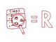

When fixing a bug
Bugs resemble cockroaches: they love to live in the darkest, mustiest places of your code. Clean up your code and the errors will practically find themselves.
Managers appreciate proactive refactoring, since it eliminates the need to create special refactoring tasks later. Happy bosses mean happy progtammers!

During code review
Review may be your last chance to tidy up your code before it becomes available to the public.
The best way to review is together with the author of the code. You propose changes and decide, together with the author, how difficult it will be to implement various refactoring techniques. Small changes can be made right on the spot.